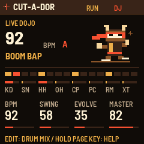
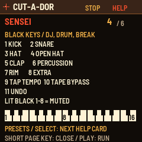
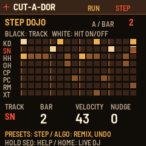

M-VAVE FM-1 / A SMALL BOX WITH TERRIBLE MANNERS
FINISH
THE
SILENCE.
Dusty kicks. Sneaky ghosts. Eight dirty punches. A pocket-sized beat dojo with absolutely no indoor voice. Born from Matador. Raised by the snare.
RELEASE 1.2.1 · FREE & OPEN SOURCE · BY KID BUNKA
No FM-1 needed for the browser dojo. No black belt needed. Ever.
BOW TO THE GROOVE / FEAR THE SNARE
FM-1 / DOJO MONITOR● NATIVE UI RENDER

NO
CHILL.
ALL KICK.
CHILL.
ALL KICK.
16 RHYTHM FAMILIES✦32 EDITABLE STEPS✦8 RECORDABLE PUNCHES✦124 SOUNDS WITH ALL BANKS
01 / THE POCKET HAS LEFT THE GRID
LESS ROBOT.
MORE ROBBERY.
Hats lean forward. Snares sit back. Ghosts do the talking between the punches. The kick keeps its feet on the floor.
POCKET AUDITION / 92 BPMSAME SOUNDS. DIFFERENT ATTITUDE.
SAME BEAT / TWO ATTITUDES
Four bars. Same kit, tempo, seed and pattern; no loudness matching, so you can hear the gain change. PUNCH 50 adds roughly 7.5–7.9 dB RMS across eight tested kits. Shared engine renders, not a recording of the physical FM-1. Only one player runs at a time.
16
Composed kick conversations.
Bar two answers bar one.
±
Live pocket timing.
Push, drag, accent, breathe.
04
Evolve checks every four bars.
Turn it off to freeze your beat.

HOLD A BUTTON. SUMMON YOUR SENSEI.THE MANUAL LIVES IN THE BOX
LESS
REMEMBERING.
MORE
DISMEMBERING.
The beat, obviously. Hold FX, SELECT, ENVELOPE, LFO, EDIT, GLOBAL, HOME, SAVE, ARP or SEQUENCE for 0.7 seconds. Your Sensei explains the controls, the parts and those mysterious black keys. The beat keeps running.
- EDIT → MIXEight drum lanes, visible levels and mutes. EDIT again: Beat DNA.
- WHITE / BLACKSelect a lane / mute a lane. Numbered help cards live on the display.
- PUNCHOutput gain, a little attack and soft peak protection. Adjustable, saved with your beat.
- GLO → SETUPActive lights, idle glow, motion and splash. Your dojo, your rules.
- HOME KNOB 4Master level. No treasure map required.

ACTUAL DEVICE UI RENDER / NOT A MOCKUPGHOSTHITACCENTPLAYHEAD
02 / WRITE YOUR OWN FIGHT SCENE
YOUR KEYS.
YOUR STEPS.
YOUR DAMAGE.
A proper two-bar step editor inside the FM-1. No laptop required with Cut-A-Dor installed. See all eight lanes. Give the snare a whisper or a wallop. Move a hit ahead or behind the beat.
- WHITE KEYSSixteen steps. Hit on, hit off.
- BLACK KEYS 1–8Choose your drum lane.
- FOUR KNOBSTrack · Bar · Velocity · Nudge.
- PRESETS / ALGORITHMSelect a step / remix a lane or Undo.
SEQ opens Step Dojo. Press again for Parts. HOME brings you straight back to DJ performance.
03 / A BLACK BELT IN BAD BEHAVIOUR
FLAWLESS?
NAH.
FILTHALITY.
Hold a punch. Release into the pocket. Record your performance over 1, 2, 4 or 8 bars, then overdub another round. Undo is your corner man.
 CHOOSE YOUR FINISHING MOVE.
CHOOSE YOUR FINISHING MOVE.Visual move demo. No audio here. Play and record the real effects in the editor ↗
04 / THE TEMPLE OF QUESTIONABLE CLEANLINESS
DIRTY DRUMS.
CLEAN ALIBI.
64 factory one-shots. 12 original breaks. Another 48 recorded hits in three compact expansion banks. Dust, hiss, low pass and high pass let you age the room without waiting thirty years.
CRATE 01 / 16 HITSDUSTY
VELVET
BREAK
DUSTY
ROOM.
Recorded drums. Close company.
OPEN THE CRATE ↗CRATE 02 / 16 HITSVELVET
CUT.
Soft edges. Hard intentions.
OPEN THE CRATE ↗CRATE 03 / 16 HITSBREAK
PIT.
Bring shoes you can ruin.
OPEN THE CRATE ↗Expansion banks are installed separately. 3 × 80 KiB slots. Recorded CC0 material: Karoryfer Gogodze Phu II and Virtuosity Drums. All credits & licences ↗
05 / EVERY NINJA HAS LIMITS
NO BULL.
DESPITE THE NAME.
We can hype the dojo. We cannot repeal physics.
No microphone recording. Import your own WAVs through the Sound Crate editor.
USB MIDI Clock OUT, Start, Stop and Continue. USB or jack clock input. A USB host is required between two USB devices. No Bluetooth or external note sequencing.
Breaks change pitch when their playback speed changes. No independent time stretching.
A rhythm partner with simple bass. No full song workstation, multitrack recorder or mastering suite.
It makes beats. You still handle your paperwork, your cuts and your stretching routine.
No invincibility cheat. Keep the recovery kit and your project backups. Firmware recovery cannot restore music you never saved.
THE LIVE EDITOR / THE DOJO IS OPEN
LESS TALK.
MORE THWACK.
This is the instrument. Make a beat, edit its steps, record your punches, then bounce a WAV for your sampler. Your FM-1 is only involved when you explicitly connect it.
INSERT COIN? ABSOLUTELY NOT.
Free to play. Headphones encouraged. Serious facial expressions optional.
The browser project is a separate session. FM-1 tools upload sample banks and export the device project; browser pattern edits are not sent live to the hardware.
32 STEPS × 8 LANESFX RECORD / OVERDUBWAV IMPORT / BOUNCEPROJECT SAVE / LOADFM-1 SOUND BANK TRANSFER
RELEASE 1.2.1 / FREE SOFTWARE. EXPENSIVE ATTITUDE.
TAKE THE DOJO
TO THE BATTLE.
For the M-VAVE FM-1 beside your turntable, portable scratch deck or sampler. Dusty drums, live grooves and recordable trouble. Built by Kid Bunka.
Expected device identity: FM-1_7010201. Start from M-VAVE Original V15. Back up projects and sound banks before installing. Recovery and source are included; installation always needs your explicit action.